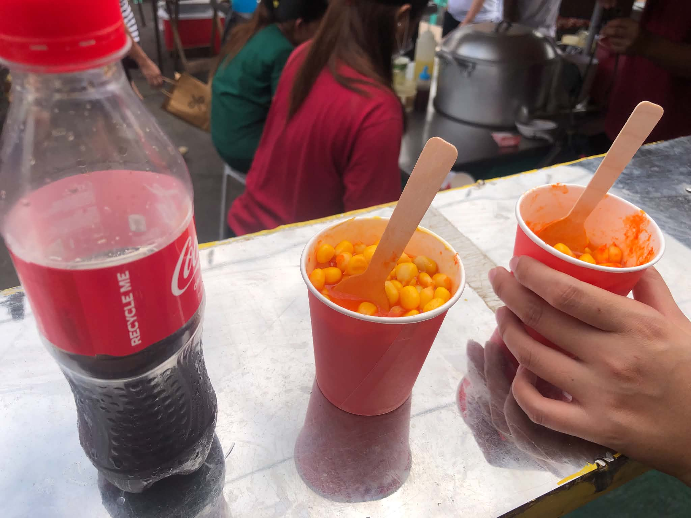
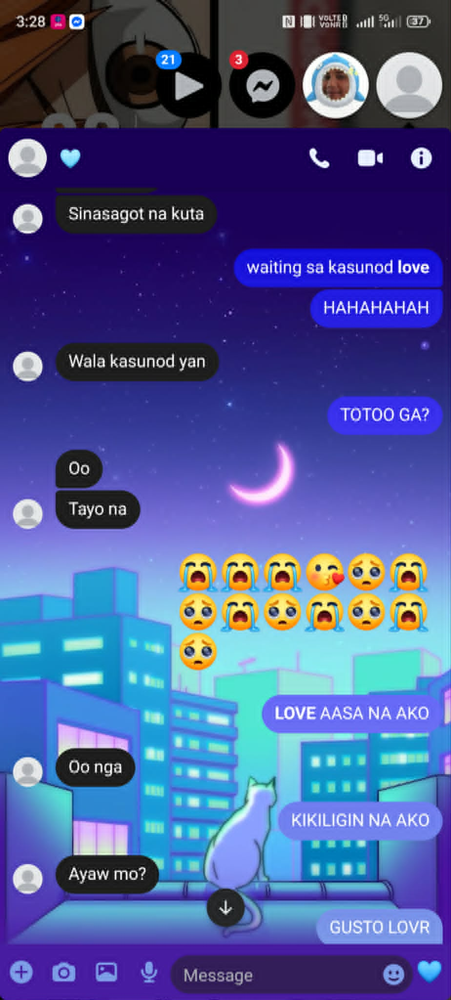

June 25, 2026 this was the day we took this video, and it will always hold a special place in my heart. This day means so much to me because it was the very first time I celebrated my birthday with someone who truly loves and cares for me. Even though my actual birthday was the next day, you chose to celebrate it early so we could spend it together. I know we were both busy, and you had just come home exhausted from work. Still, you chose to make time for me and celebrate my birthday. That means more to me than words can ever express. Thank you for never forgetting my special day and for making it one of the most unforgettable moments of my life. Your love, effort, and thoughtfulness made me feel incredibly cherished, and I'll always be grateful for that. I will forever treasure this memory, because it wasn't just about celebrating my birthday it was about celebrating it with the person who makes my life so much happier.

The same day, we celebrated my birthday at the night market. We chose to celebrate there because we both know how amazing street food can be. As we enjoyed every bite, we spent the afternoon talking about our dreams, our goals, and the future we want to build together. Even though we celebrated with simple street food, it was more than enough for me because I was with you. Being by your side and having those heartfelt conversations was the greatest birthday gift I could ever ask for. That afternoon wasn't about fancy restaurants or expensive gifts it was about creating beautiful memories with the person I love. Celebrating my birthday with you made my heart so full, and that's something money could never buy. Here's to many more celebrations together, my love. Even if we spend them eating street food, I'll never get tired of it, as long as I'm sharing those moments with you. Because no matter where we are or what we're eating, being with you will always be my favorite place to be.

June 26, 2026 that was my birthday, and it's a date I'll never forget. You were the very first person to greet me, and our conversation that morning about us and our relationship made me happier than words can describe. Just knowing that someone was willing to talk to me first thing in the morning, and that I was one of the first people on your mind when you woke up, meant everything to me. I always looked forward to our morning conversations before we both got busy with our own lives. That morning became the most beautiful morning I've ever experienced. On that day, you gave me one of the greatest, most unforgettable gifts I have ever received you said yes to me. To some people, it might have been just a simple answer, but to me, it was the most beautiful answer I have ever heard in my entire life. You accepted my love and returned it with your own. You answered every feeling I had kept in my heart. You didn't just make me your boyfriend that day you made my birthday truly special. You know how much I used to hate that day, but because of you, you turned it into one of the happiest and most meaningful days of my life. I'll never forget it because it isn't just my day anymore; it's our day now. Thank you so much, my love, for loving me back, for saying yes, and for trusting me enough to make me your boyfriend. I'll treasure this birthday forever because you made it the most beautiful birthday I've ever had.
I picked you up after work, and I knew how exhausted you were. I could see it in your eyes, in the way you walked, and especially in the moment you rested your head on my shoulder. That moment meant more to me than you probably realized. It wasn't just a simple gesture it was a sign that you felt safe and comfortable with me, and that made my heart so happy. I want you to know that my shoulder will always be here for you. Whenever you're tired, overwhelmed, or simply need a place to rest, you can always lean on me. Not just my shoulder, but my heart, my time, and my love will always be yours. You don't have to carry every burden by yourself. I'll be here to support you through your hardest days and celebrate your happiest ones. If I can make even a small part of your day easier, then I'll gladly do it every single time. Seeing you find comfort in me is one of the best feelings I've ever experienced. I hope that no matter what life brings, you'll always know that you'll never have to face it alone because I'll always be right here beside you. Rest whenever you need to, my love. As long as I'm here, you'll always have a place where you can feel safe, loved, and at home.